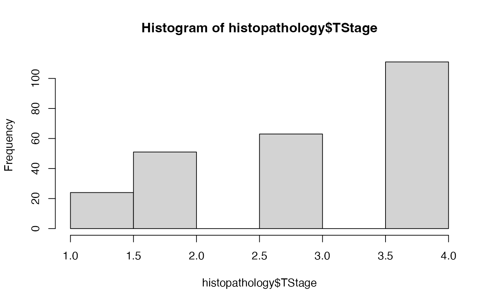

A simulated dataset for histopathological research, containing patient demographics, clinical findings, and hypothetical molecular data. This dataset is intended for demonstration and testing of analysis functions.
Usage
data(histopathology)Format
A data frame with 250 rows and 38 variables:
- ID
Numeric. Unique patient identifier.
- Name
Character. Patient's name (simulated).
- Sex
Character. Patient's sex (e.g., "Male", "Female").
- Age
Numeric. Patient's age in years.
- Race
Character. Patient's race (e.g., "White", "Black").
- PreinvasiveComponent
Character. Presence of preinvasive component (e.g., "Present", "Absent").
- LVI
Character. Lymphovascular invasion status (e.g., "Present", "Absent").
- PNI
Character. Perineural invasion status (e.g., "Present", "Absent").
- LastFollowUpDate
POSIXct. Date and time of the last follow-up.
- Death
Character. Death status (e.g., "YANLIŞ" for False/No, "DOĞRU" for True/Yes). Indicates if the patient died.
- Group
Character. Treatment or control group (e.g., "Control", "Treatment").
- Grade
Numeric. Tumor grade (e.g., 1, 2, 3).
- TStage
Numeric. Tumor stage (e.g., 1, 2, 3, 4).
Anti-X-intensityNumeric. Intensity of Anti-X marker staining.
Anti-Y-intensityNumeric. Intensity of Anti-Y marker staining.
- LymphNodeMetastasis
Character. Lymph node metastasis status (e.g., "Present", "Absent").
- Valid
Character. Validity status (e.g., "YANLIŞ", "DOĞRU"). Meaning needs context.
- Smoker
Character. Smoking status (e.g., "YANLIŞ", "DOĞRU").
- Grade_Level
Character. Tumor grade categorized (e.g., "low", "high", "moderate").
- SurgeryDate
POSIXct. Date and time of surgery.
- DeathTime
Character. Time to death category (e.g., "Within1Year").
- int
Character. Interval string, likely representing the duration between two dates.
- OverallTime
Numeric. Overall time, likely survival time in some unit (e.g., months).
- Outcome
Numeric. Outcome variable, likely coded (e.g., 0 for alive, 1 for deceased).
- Mortality5yr
Character. 5-year mortality status (e.g., "Alive", "Dead").
Rater 1Numeric. Rating from Rater 1.
Rater 2Numeric. Rating from Rater 2.
Rater 3Numeric. Rating from Rater 3.
Rater ANumeric. Rating from Rater A.
Rater BNumeric. Rating from Rater B.
New TestNumeric. Result of a new diagnostic test.
Golden StandartNumeric. Result of a gold standard diagnostic test.
- MeasurementA
Numeric. A continuous measurement.
- MeasurementB
Numeric. Another continuous measurement.
Disease StatusCharacter. Disease status (e.g., "Ill", "Healthy").
- Measurement1
Numeric. Measurement from a test or observation.
- Measurement2
Numeric. Another measurement from a test or observation.
- Outcome2
Character. A secondary outcome measure with levels like "DOD" (Dead of Disease), "DOOC" (Dead of Other Cause), "AWD" (Alive with Disease), "AWOD" (Alive Without Disease).
Examples
data(histopathology)
str(histopathology)
#> spc_tbl_ [250 × 38] (S3: spec_tbl_df/tbl_df/tbl/data.frame)
#> $ ID : num [1:250] 1 2 3 4 5 6 7 8 9 10 ...
#> $ Name : chr [1:250] "Tonisia" "Daniyah" "Naviana" "Daerion" ...
#> $ Sex : chr [1:250] "Male" "Female" "Male" "Male" ...
#> $ Age : num [1:250] 27 36 65 51 58 53 33 26 25 68 ...
#> $ Race : chr [1:250] "White" "White" "White" "White" ...
#> $ PreinvasiveComponent: chr [1:250] "Present" "Absent" "Absent" "Absent" ...
#> $ LVI : chr [1:250] "Present" "Absent" "Absent" "Present" ...
#> $ PNI : chr [1:250] "Absent" "Absent" "Absent" "Absent" ...
#> $ LastFollowUpDate : chr [1:250] "2019.10.22 00:00:00" "2019.06.22 00:00:00" "2019.08.22 00:00:00" "2019.03.22 00:00:00" ...
#> $ Death : chr [1:250] "YANLIŞ" "DOĞRU" "DOĞRU" "YANLIŞ" ...
#> $ Group : chr [1:250] "Control" "Treatment" "Control" "Treatment" ...
#> $ Grade : num [1:250] 2 2 1 3 2 2 1 2 3 3 ...
#> $ TStage : num [1:250] 4 4 4 4 1 4 2 3 4 4 ...
#> $ Anti-X-intensity : num [1:250] 3 2 2 3 3 3 2 2 1 2 ...
#> $ Anti-Y-intensity : num [1:250] 1 1 2 3 3 2 2 2 1 3 ...
#> $ LymphNodeMetastasis : chr [1:250] "Present" "Absent" "Absent" "Absent" ...
#> $ Valid : chr [1:250] "YANLIŞ" "DOĞRU" "YANLIŞ" "DOĞRU" ...
#> $ Smoker : chr [1:250] "YANLIŞ" "YANLIŞ" "DOĞRU" "YANLIŞ" ...
#> $ Grade_Level : chr [1:250] "high" "low" "low" "high" ...
#> $ SurgeryDate : chr [1:250] "2019.07.08 00:00:00" "2019.03.18 00:00:00" "2019.05.18 00:00:00" "2018.10.24 00:00:00" ...
#> $ DeathTime : chr [1:250] "Within1Year" "Within1Year" "Within1Year" "Within1Year" ...
#> $ int : chr [1:250] "2019-07-08 UTC--2019-10-22 UTC" "2019-03-18 UTC--2019-06-22 UTC" "2019-05-18 UTC--2019-08-22 UTC" "2018-10-24 UTC--2019-03-22 UTC" ...
#> $ OverallTime : num [1:250] 3.5 3.1 3.1 4.9 3.3 9.3 6.3 9 5.8 9.9 ...
#> $ Outcome : num [1:250] 0 1 1 0 0 0 1 1 1 0 ...
#> $ Mortality5yr : chr [1:250] "Alive" "Dead" "Dead" "Alive" ...
#> $ Rater 1 : num [1:250] 0 1 1 0 0 0 1 1 1 0 ...
#> $ Rater 2 : num [1:250] 0 0 0 0 0 0 0 0 0 0 ...
#> $ Rater 3 : num [1:250] 1 1 1 0 1 1 1 1 1 1 ...
#> $ Rater A : num [1:250] 3 2 3 3 2 3 1 1 2 1 ...
#> $ Rater B : num [1:250] 3 2 3 3 2 3 1 1 2 1 ...
#> $ New Test : num [1:250] 0 0 0 0 0 0 1 0 0 0 ...
#> $ Golden Standart : num [1:250] 0 0 0 0 0 0 0 0 0 0 ...
#> $ MeasurementA : num [1:250] -1.63432 0.37071 0.01585 -1.23584 -0.00141 ...
#> $ MeasurementB : num [1:250] 0.611 0.554 0.742 0.622 0.527 ...
#> $ Disease Status : chr [1:250] "Ill" "Ill" "Healthy" "Ill" ...
#> $ Measurement1 : num [1:250] 0.387 0.829 0.159 2.447 0.847 ...
#> $ Measurement2 : num [1:250] 1.8654 0.5425 0.0701 2.4071 0.5564 ...
#> $ Outcome2 : chr [1:250] "DOD" "DOOC" "AWD" "AWOD" ...
#> - attr(*, "spec")=
#> .. cols(
#> .. ID = col_double(),
#> .. Name = col_character(),
#> .. Sex = col_character(),
#> .. Age = col_double(),
#> .. Race = col_character(),
#> .. PreinvasiveComponent = col_character(),
#> .. LVI = col_character(),
#> .. PNI = col_character(),
#> .. LastFollowUpDate = col_character(),
#> .. Death = col_character(),
#> .. Group = col_character(),
#> .. Grade = col_double(),
#> .. TStage = col_double(),
#> .. `Anti-X-intensity` = col_double(),
#> .. `Anti-Y-intensity` = col_double(),
#> .. LymphNodeMetastasis = col_character(),
#> .. Valid = col_character(),
#> .. Smoker = col_character(),
#> .. Grade_Level = col_character(),
#> .. SurgeryDate = col_character(),
#> .. DeathTime = col_character(),
#> .. int = col_character(),
#> .. OverallTime = col_double(),
#> .. Outcome = col_double(),
#> .. Mortality5yr = col_character(),
#> .. `Rater 1` = col_double(),
#> .. `Rater 2` = col_double(),
#> .. `Rater 3` = col_double(),
#> .. `Rater A` = col_double(),
#> .. `Rater B` = col_double(),
#> .. `New Test` = col_double(),
#> .. `Golden Standart` = col_double(),
#> .. MeasurementA = col_double(),
#> .. MeasurementB = col_double(),
#> .. `Disease Status` = col_character(),
#> .. Measurement1 = col_double(),
#> .. Measurement2 = col_double(),
#> .. Outcome2 = col_character()
#> .. )
head(histopathology)
#> # A tibble: 6 × 38
#> ID Name Sex Age Race PreinvasiveComponent LVI PNI
#> <dbl> <chr> <chr> <dbl> <chr> <chr> <chr> <chr>
#> 1 1 Tonisia Male 27 White Present Present Absent
#> 2 2 Daniyah Female 36 White Absent Absent Absent
#> 3 3 Naviana Male 65 White Absent Absent Absent
#> 4 4 Daerion Male 51 White Absent Present Absent
#> 5 5 Tamyiah Female 58 Black Absent Absent Absent
#> 6 6 Donnajo Female 53 White Absent Present Present
#> # ℹ 30 more variables: LastFollowUpDate <chr>, Death <chr>, Group <chr>,
#> # Grade <dbl>, TStage <dbl>, `Anti-X-intensity` <dbl>,
#> # `Anti-Y-intensity` <dbl>, LymphNodeMetastasis <chr>, Valid <chr>,
#> # Smoker <chr>, Grade_Level <chr>, SurgeryDate <chr>, DeathTime <chr>,
#> # int <chr>, OverallTime <dbl>, Outcome <dbl>, Mortality5yr <chr>,
#> # `Rater 1` <dbl>, `Rater 2` <dbl>, `Rater 3` <dbl>, `Rater A` <dbl>,
#> # `Rater B` <dbl>, `New Test` <dbl>, `Golden Standart` <dbl>, …
summary(histopathology$Age)
#> Min. 1st Qu. Median Mean 3rd Qu. Max. NA's
#> 25.00 38.00 49.00 49.44 62.00 73.00 1
hist(histopathology$TStage)
